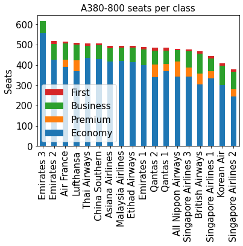

To calculate an individual’s CO2 emissions, we need to know how many seats there are on the plane. This isn’t a straightforward question. Different airlines choose different seating configurations for the same model of plane. Sometimes the same airline even has several layouts for the same model! The A380-800 is a good example.
The maximum capacity of the A380-800 is 868 seats, in single-class (economy) configuration. However, no airline operates such a layout. Using SeatGuru, we see that the number of seats on an A380-800 varies by as much as 60% depending on airline and layout. At the two ends of the spectrum, Emirates layout 3 has 615 seats while Singapore Airlines layout 2 has 379. That’s a factor 1.6 different! Everything else being equal, a passenger on Singapore Airlines layout 2 will be responsible for 60% more CO2 than a passenger on Emirates layout 3. Even within the same airline, Emirates layouts 1 and 3 and Singapore Airlines 2 and 3 are both a factor 1.25 different.
To properly calculate CO2 emissions, both aircraft model and seating configuration must be known.
SeatGuru accessed 2020-11.